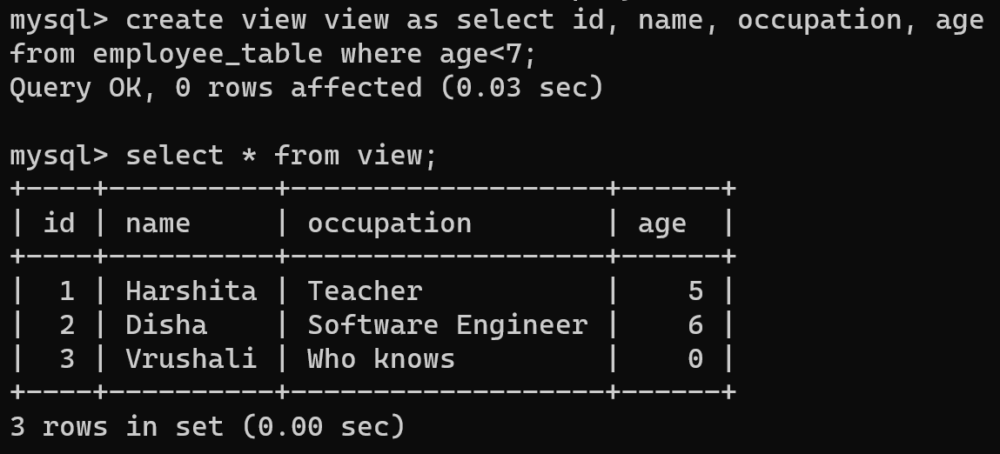
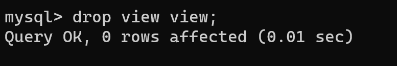

Views in SQL are kind of virtual tables. A view also has rows and columns as they are in a real table in the database. We can create a view by selecting fields from one or more tables present in the database. A View can either have all the rows of a table or specific rows based on certain condition. In this article we will learn about creating , deleting and updating Views
CREATING VIEWS
We can create View using CREATE VIEW statement. A View can be created from a single table or multiple tables.
Syntax:
CREATE VIEW view_name AS SELECT column1, column2..... FROM table_name WHERE condition;
view_name: Name for the View
table_name: Name of the table
condition: Condition to select rows

DELETING VIEWS
We have learned about creating a View, but what if a created View is not needed any more? Obviously we will want to delete it. SQL allows us to delete an existing View. We can delete or drop a View using the DROP statement.
Syntax:
DROP VIEW view_name;
view_name: Name of the View which we want to delete.
